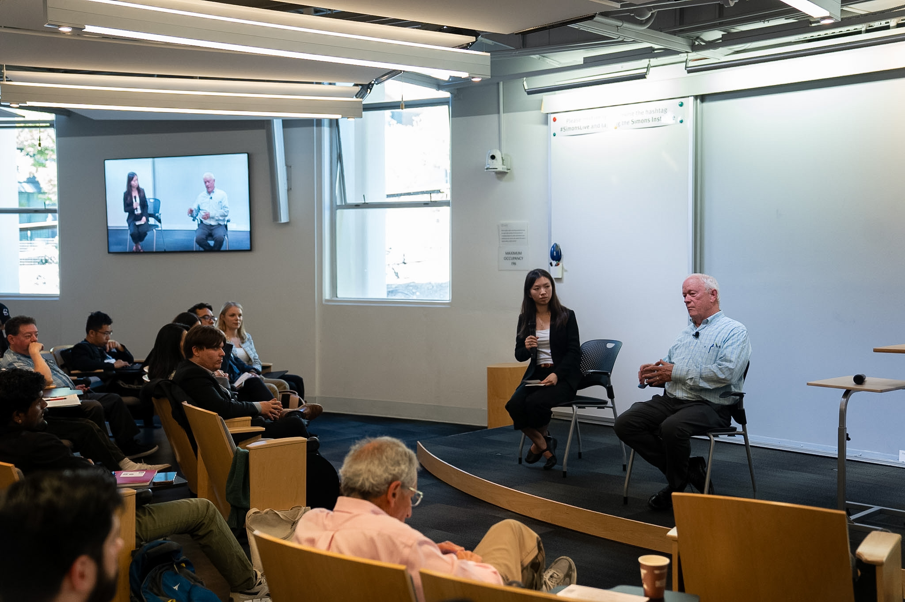
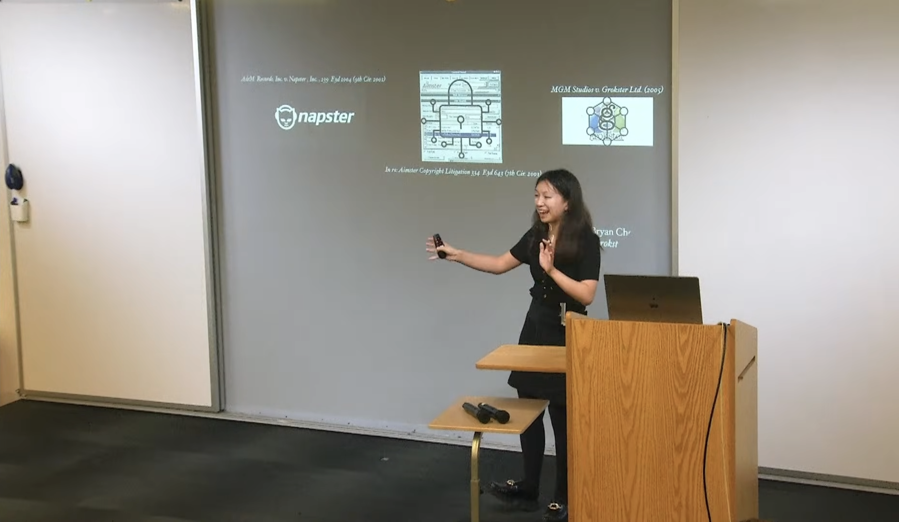
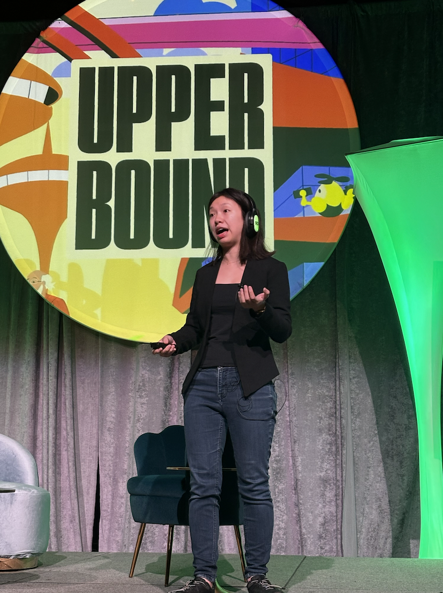

I am a final-year PhD student in computer science at Brown University and the CNTR, where I am fortunate to be advised by Professor Suresh Venkatasubramanian. I conduct interdisciplinary research in tech policy and law with an emphasis on loopholes, avoision, and incentives.
I hold an S.M. in technology and policy from MIT and a B.A. from Scripps College.
Apr 30, 2026: Co-organized the Governance at the Technological Frontier Workshop at the Simons Institute for the Theory of Computing, hosting the first-ever sitting public official at the Simons Institute.
Feb 11, 2026: Gave a talk on Alignment Problems in AI Governance at the Simons Institute for the Theory of Computing with Greg Demirchyan. Recording available here.
Dec 05, 2025: Defended my dissertation proposal! Lucky to have Professors Serena Booth and Bryan Choi on my dissertation committee.
Aug 14, 2025: Gave a talk on Red Teaming AI Policy as part of the DLA Piper guest speaker series. Thanks to the inspirational Bogdana Rakova for the invitation!
May 20, 2025: Gave a talk on Data Privacy and AI at UpperBound AI (organized by the University of Alberta) in Edmonton, Canada. Thanks to the amazing Professor Bailey Kacsmar for the invitation!
Mar 09-14, 2025: Attended Schloss Dagstuhl Seminar 25112 on privacy-enhancing technologies and AI in Wadern, Germany (where I met and reunited with my research role models). Thanks to the organizers for the invitation!
Feb 17, 2025: Gave a talk on Data Protection and AI for the Mila - Quebec AI Institute FATE and Society Reading Group. Thanks to Khaoula Chehbouni and Taylor Lynn Curtis for the opportunity to speak with such a wonderful audience!

Governance at the Technological Frontier Simons Institute for the Theory of Computing, UC Berkeley April 30, 2026
Q&A with CA Senator. [Video Recording]

Alignment Problems in AI Governance Simons Institute for the Theory of Computing, UC Berkeley February 11, 2026
Joint talk with Greg Demirchyan. [Video Recording]

Data Privacy and AI UpperBound AI (University of Alberta), Edmonton, Canada May 20, 2025
Invited talk on data privacy, protection, and machine learning regulation.
[13] SIGecom Winter Highlights: Algorithmic Game Theory, AI, and the Law
Sara Fish,
Vrinda Pareek,
Rui-Jie Yew
SIGecom Exchanges 2026
[12] Red Teaming the Rules: An Adversarial Approach to Legal Alignment
Rui-Jie Yew,
Greg Demirchyan
ICLR Workshop on Algorithmic Fairness Across Alignment Procedures and Agentic Systems 2026